<!doctype html>
<html>
	<head>
		<meta charset="utf-8">
		<meta name="viewport" content="width=device-width, initial-scale=1.0, maximum-scale=1.0, user-scalable=no">

		<title>Análisis de Objetos</title>

		<link rel="stylesheet" href="dist/reset.css">
		<link rel="stylesheet" href="dist/reveal.css">
		<link rel="stylesheet" href="dist/theme/Serif.css" id="theme">

		<!-- Theme used for syntax highlighted code -->
		<link rel="stylesheet" href="plugin/highlight/monokai.css" id="highlight-theme">

		<link rel="stylesheet" href="dist/style.css">


		<style>
				  
			.primera #marca-agua{
				display:none;
				}

			.primera #lecture{
				display:none;
				}

			#clock {
				font-size: 20px;
				color: #51483D;
				width: 120px;
				margin: 0px;
				text-align: center;
				border: 2px solid black;
				border-radius: 20px;
				}


			.reveal section p {
				font-size: 0.7em;
				  }

			.reveal section li {
				font-size: 0.6em;
				  }

			.reveal .slide-number {
				right: 150px;
				 bottom: 3px}

			.reveal h3 {
				text-align: left;
				  }

		</style>

	</head>
	<body>

		<script>
			setInterval(showTime, 1000);
			function showTime() {
				let time = new Date();
				let hour = time.getHours();
				let min = time.getMinutes();
				let sec = time.getSeconds();
				am_pm = "am";
	
				if (hour > 12) {
					hour -= 12;
					am_pm = "pm";
				}
				if (hour == 0) {
					hr = 12;
					am_pm = "am";
				}
	
				hour = hour < 10 ? "0" + hour : hour;
				min = min < 10 ? "0" + min : min;
				sec = sec < 10 ? "0" + sec : sec;
	
				let currentTime = hour + ":"
					+ min + ":" + sec + am_pm;
	
				document.getElementById("clock")
					.innerHTML = currentTime;
			}
	
			showTime();
		</script>

		<div class="reveal">
			<div class="slides">
			
				<div id="marca-agua"><p id="date"></p></div>
				<!--<div id="lecture" style="font-size:20px;position:absolute;top:100%;right:32%;">Machine Learning (Introducción)</div>-->
				<div id="clock" style="font-size:20px;position:absolute;top:98%;right:0%;">0:00:00</div>
				<section data-background-color= "#ffffff"; data-state="primera">
				  <h1>ANÁLISIS GEOESPACIAL</h1>
				  <h2>Análisis de Objetos</h2>
				  <p>
				  <h4><a href="https://edieraristizabal.github.io/">Prof. Edier Aristizábal</a></h4>
				  </p>
					
					<p id="demo" style="position:absolute;top:100%;right:40%;"></p>
					<script>
					var d = new Date();
					var months = ["Jan.","Feb.","Mar.","Apr.","May.","Jun.","Jul.","Aug.","Sept.","Oct.","Nov.","Dec."];
					document.getElementById("demo").innerHTML = months[d.getMonth()] + " " +d.getDate()+" / "+d.getFullYear();
					</script>
				</section>

				<section>
					<h1>Frequency Distribution and Histograms</h1>

					<section>
						<p><strong>Frequency distribution table</strong> is a table that stores the categories (also called
							“bins”), the frequency, the relative frequency and the cumulative relative
							frequency of a single continuous interval variable</p>
						<p>The <strong>frequency</strong> for a particular category or value (also called “observation”)
							of a variable is the number of times the category or the value appears in the
							dataset.</p>
						<p><strong>Relative frequency</strong> is the proportion (%) of the observations that belong to a
							category. It is used to understand how a sample or population is distributed
							across bins (calculated as relative frequency = frequency/n )</p>
						<p>The <strong>cumulative relative frequency</strong> of each row is the addition of the relative
							frequency of this row and above. It tells us what percent of a population
							(observations) ranges up to this bin. The final row should be 100%.</p>
						<p>A <strong>probability density histogram</strong> is defined so that (i) The area of each box equals the relative frequency (probability) of the
							corresponding bin, (ii) The total area of the histogram equals 1</p>
					</section>

					<section>
						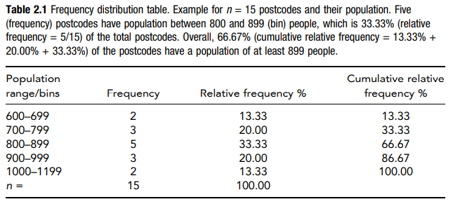
					</section>

					<section>
						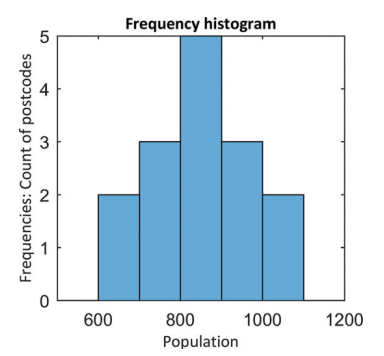
					</section>
				
					<section>
						<h3>PDF</h3>
						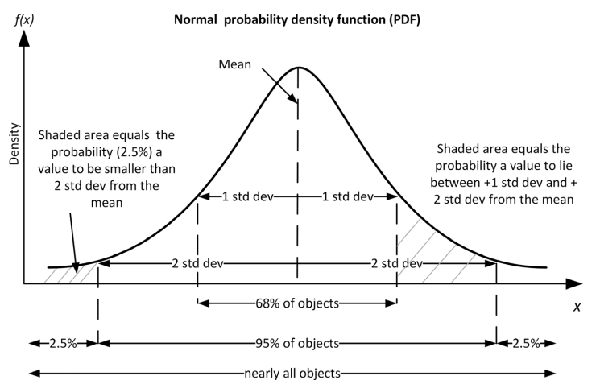
					</section>

				</section>

				<section>
					<h1>Box plot</h1>

					<section>
						<p>A boxplot is a graphical representation of the key descriptive statistics of a
							distribution.</p>
						<p>The characteristics of a boxplot are</p>
						<ul>
							<li>The box is defined by using the lower quartile Q1 (25%; left vertical edge of
								the box) and the upper quartile Q3 (75%; right vertical edge of the box). The
								length of the box equals the interquartile range IQR = Q3  Q1.</li>
							<li>The median is depicted by using a line inside the box. If the median is not
								centered, then skewness exists.</li>
							<li>To trace and depict outliers, we have to calculate the whiskers, which are
								the lines starting from the edges of the box and extending to the last
								object not considered an outlier.</li>
							<li>Objects lying further away than 1.5  IQR are considered outliers.</li>
							<li>Objects lying more than 3.0  IQR are considered extreme outliers, and
								those between (1.5  IQR and 3.0  IQR) are considered mild outliers. One
								may change the 1.5 or 3.0 coefficient to another value according to the
								study’s needs, but most statistical programs use these values by default.</li>
							<li>Whiskers do not necessarily stretch up to 1.5  IQR but to the last object
								lying before this distance from the upper or lower quartiles.</li>
						</ul>

					</section>

					<section>
						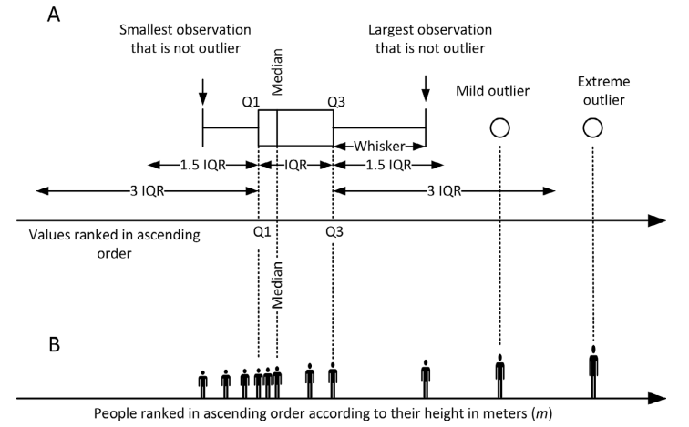
					</section>

					<section>
						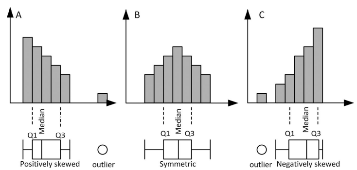
					</section>

					<section>
						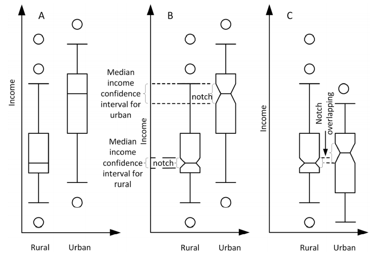
					</section>

				</section>

				<section>
					<h1>QQ plot</h1>

					<section>
						<p>The normal QQ plot is a graphical technique that plots data against a theoretical normal distribution that forms a straight line</p>
						<p>A normal QQ plot is used to identify if the data are normally distributed</p>
						<p>If data points deviate from the straight line and curves appear (especially in
							the beginning or at the end of the line), the normality assumption is violated.</p>
					</section>

					<section>
						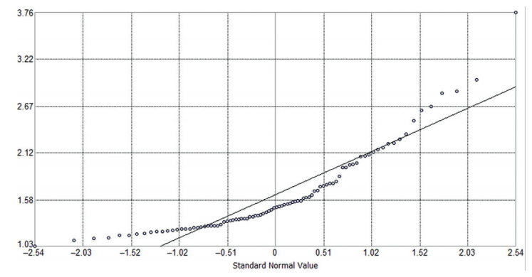
					</section>

				</section>

				<section>
					<h1>Scatter plot</h1>

					<section>
						<p>A scatter plot displays the values of two variables as a set of point coordinates</p>

						<p>A scatter plot is used to identify the relations between two variables and trace
							potential outliers.</p>
						<p>Inspecting a scatter plot allows one to identify linear or other types of associations</p>

						<p>If points tend to form a linear pattern, a linear
							relationship between variables is evident. If data points are scattered, the linear
							correlation is close to zero, and no association is observed between the two
							variables. Data points that lie further away on the x or y direction (or both) are
							potential outliers</p>
					</section>

					<section>
						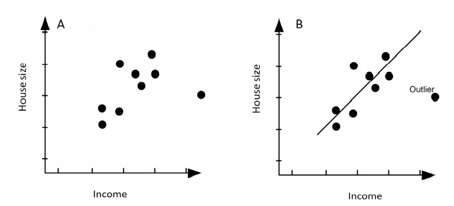
					</section>

					<section>
						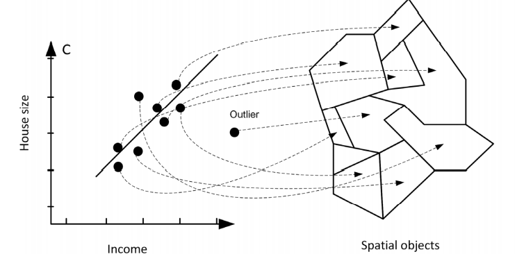
					</section>

					<section>
						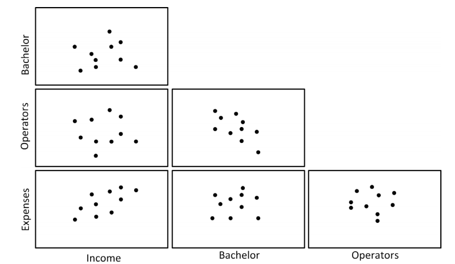
					</section>

				</section>

				<section>
					<h1>Covariance matrix</h1>

					<section>
						<p>Covariance is a measure of the extent to which two variables vary together
							(i.e., change in the same linear direction). Covariance Cov(X, Y) is calculated as:</p>
						$cov_{x,y}=\frac{\sum_{i=1}^{n}(x_{i}-\bar{x})(y_{i}-\bar{y})}{n-1}$

						<p>where
							$x_i$ is the score of variable X of the i-th object,
							$y_i$ is the score of variable Y of the i-th object,
							$\bar{x}$ is the mean value of variable X,
							$\bar{y}$ is the mean value of variable Y.</p>
						<p>For positive covariance, if variable X increases, then variable Y increases as well.
							If the covariance is negative, then the variables change in the opposite way
							(one increases, the other decreases). Zero covariance indicates no correlation
							between the variables.</p>
					</section>

					<section>
						
					</section>
				</section>

				<section>
					<h1>Correlation coefficient</h1>

					<section>
						<p>Correlation coefficient $r_{(x, y)}$ analyzes how two variables (X, Y) are
							linearly related. Among the correlation coefficient metrics available, the most
							widely used is the Pearson’s correlation coefficient (also called Pearson
							product-moment correlation),</p>
							$r_{(x, y)} = \frac{\text{cov}(X,Y)}{s_x s_y}$
						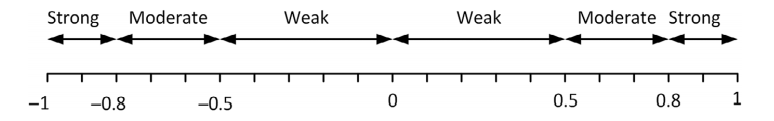
						<p>Correlation is a measure of association and not of causation.</p>
					</section>

					<section>
						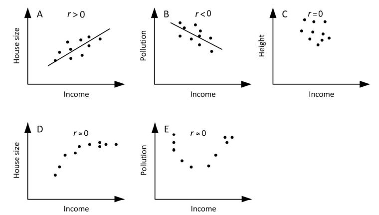
					</section>

				</section>

				<section>
					<h1>Multivariate data analysis</h1>

					<section>
						<h3>Dissmilarity matrix</h3>
						<p>It is a square and symmetric matrix that stores the pairwise dissimilarities among n observations (data points) calculated through any
							statistical distance metric d (5.2). The diagonal cells are defined as zero (distance with itself ) while the off-diagonal cells store the pairwise dissimi</p>
						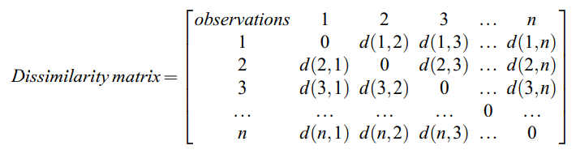
						
					</section>
				</section>

				
				<section>
					<h1>Point pattern analysis</h1>

					<section>
						<h3>Process vs Pattern</h3>
						<p><strong>Spatial process</strong> is a description of how a <strong>spatial pattern</strong> can be generated.</p>
						<p> There are three main types of spatial porcess:</p>
						<ul>
							<li>Complete spatial randomness process --> <strong>Random spatial pattern</strong>
								<ul>
									<li>There is an equal probability of event occurrence at any location in
										the study region (also called first-order stationary).</li>
									<li>The location of an event is independent of the locations of other
										events (also called second-order stationary).</li>
								</ul>
							</li>	</br>
							<li>Competitive process --> <strong>Dispersed</strong>: is a process that leads events to be arranged as far
								away from each other as possible, events tend to be
								uniformly distributed</li>	</br>
							<li>Aggregating process --> <strong>Clustered</strong>: is a process where events tend to cluster as a
								result of some pulling action. The events create clusters in some parts of the study area, and
								the pattern has a large variation</li>
						</ul>
					</section>

					<section>
						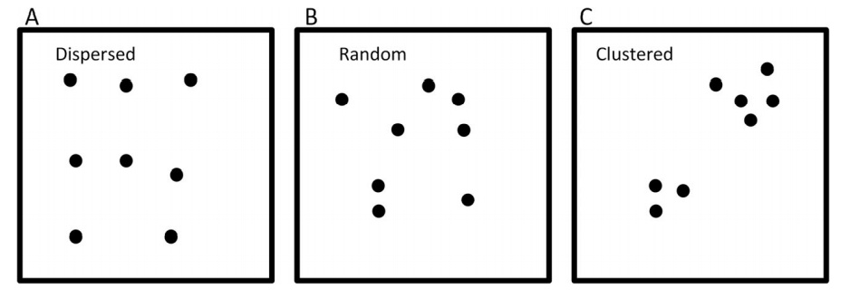
					</section>

					<section>
						<h3>Centrograhy</h3>
						<p>A very basic form of point pattern analysis involves summary statistics such as the mean center, 
							standard distance and standard deviational ellipse.</p>
							
					</section>

					<section>
						<h3>Standard deviational ellipse</h3>
						<p>It is a measure of dispersion (spread) that calculates
							standard distance separately in the x and y directions. Standard deviational ellipse reveals dispersion 
							and directional trend</p>
						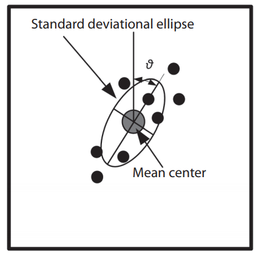
					</section>

					<section>
						<h3>Convex Hull </h3>
						<p>The convex hull of a point pattern pp is the smallest convex set that contains pp</p>
						
					</section>

					<section>
						<p> A point pattern consists of a set of events at a set of
							locations, where each event represents a single instance of the phenomenon of
							interest </p>
						<p>Most point pattern analysis techniques deal only with the location of the
							events and not with other attributes they might carry.</p>
						<p>There are two main (interrelated) methods of analyzing point patterns, namely
							the distance-based methods and the density-based methods.</p>
						<ul>
							<li><strong>Density-based methods--> Absolute location</strong> use the intensity of events occurrence across
								space. For this reason, they describe <strong>first-order effects</strong> better. Kernel estimation methods are common density ased methods. In quadrat count methods, space is divided into a regular
								grid (such as a grid of squares or hexagons) of a unitary area. Each unitary
								region includes a different number of points due to a spatial process. The
								distribution analysis and its correspondence to a spatial pattern are based
								on probabilistic and statistical methods. Another, more widely used
								method is the kernel density estimation (KDE).</li>
							<li><strong>Distance-based methods --> relative location</strong> employ the distances among events and describe
								<strong>second-order effects</strong>. Such methods include the nearest neighbor method the G and F distance functions,
								the Ripley’s K distance function and its transformation,</li>
						</ul>
					</section>

					<section>
						<h3>Quadrat density</h3>
						<p>This technique requires that the study area be divided into sub-regions (aka quadrats). Then, 
							the point density is computed for each quadrat by dividing the number of points in each quadrat 
							by the quadrat’s area. Quadrats can take on many different shapes such as hexagons and triangles</p>
							

					</section>

					<section>
						<h3>Kernel Density Function</h3>
						<p>The kernel density approach is an extension of the quadrat method. Kernel density estimation is a nonparametric method that uses kernel functions to create smooth maps of density values, in which the density at each
							location indicates the concentration of points within the neighboring area
							(high concentrations as peaks, low concentrations as valleys)</p>
						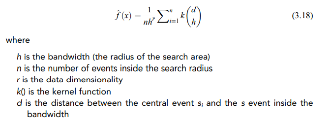
					</section>

					<section>
						<h3>Kernel Density Function</h3>
						
					</section>

					<section>
						<h3>Kernel Density Function</h3>
						
					</section>

					<section>
						<h3>Kernel Density Function</h3>
						
					</section>

					<section>
						<h3>Modeling intensity as a function of a covariate</h3>
						<p>It is often more interesting to model the relationship between the distribution of points and some 
							underlying covariate by defining that relationship mathematically. This can be done by exploring 
							the changes in point density as a function of a covariate.</p>
							$Pr(X_i) = {\frac{exp(\beta_0 + \beta_1X_i)}{1 + exp (\beta_0 + \beta_1X_i)}}$
							

					</section>

					<section>
						<h3>NN analysis</h3>
						<p>The
							method compares the observed spatial distribution to a random theoretical
							one. The <strong>Average Nearest Neighbor (NN)</strong> tool measures the distance between each feature centroid and its nearest
							neighbor's centroid location. It then averages all these nearest neighbor distances. 
							If the average distance is less than the average for a hypothetical random distribution, 
							the distribution of the features being analyzed is considered clustered. If the average distance 
							is greater than a hypothetical random distribution, the features are considered dispersed.</p>
						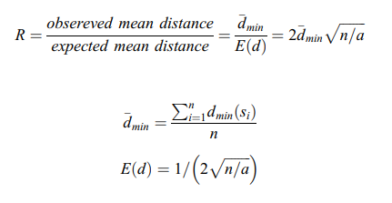
					</section>

					<section>
						<h3>NN analysis</h3>
						
					</section>

					<section>
						<h3>NN analysis</h3>
						<p>An extension of this idea is to plot the ANN values for different order neighbors, that is for the first closest point, then the second closest point, and so forth.</p>
						
						
					</section>

					<section>
						<h3>Ripley's K function</h3>
						<p>It is a spatial analysis method of analyzing point patterns
							based on a distance function. The outcome of the function is the
							expected number of events inside a radius of d.
							It is calculated as a series of incremental distances d centered on each of the
							events in turn</p>
							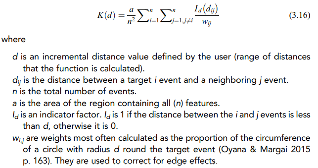
					</section>

					<section>
						<h3>Ripley's K function</h3>
						
					</section>

					<section>
						<h3>Transformation of the Ripley's K function</h3>
						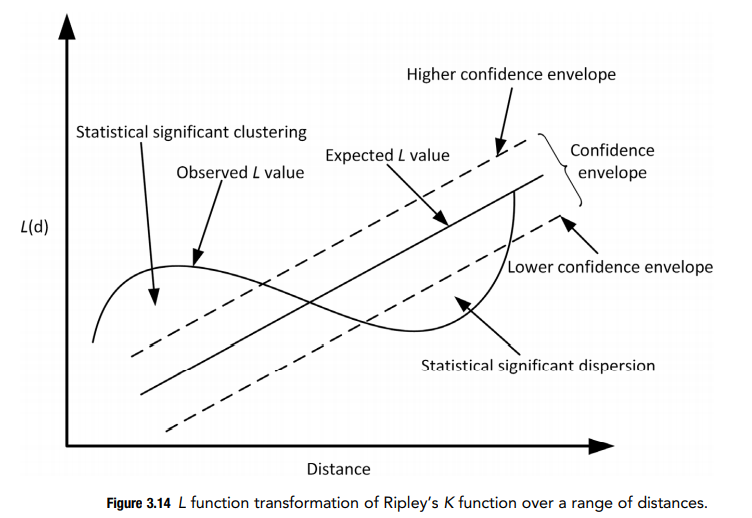
					</section>
				</section>

				

				<section>
					<h1>Regionalization</h1>

					<section>
						<p>Regionalization consists of a set of methods that cluster multivariate spatial
							data based on spatial constraints. It is a procedure of grouping a large number
							of spatial objects into a desirable smaller number of homogeneous clusters that
							also occupy contiguous regions in space. The spatial
							clusters are also named regions.</p>
					</section>
				</section>

				<section>			
					<h1>Choropleth maps</h1>
	
					<section>
						<p>Choropleth maps are thematic maps in which areas are rendered according to the
							values of the variable displayed</p>
	
						<p>Cloropleth maps are used to obtain a graphical perspective of the spatial
							distribution of the values of a specific variable across the study area.</p>
						<p>There are two main categories of variables displayed in
							choropleth maps:</p>
						<ul>
							<li><strong>Spatially extensive variables:</strong> each polygon is rendered based on a
								measured value that holds for the entire polygon. <strong>Ej.</strong>total population</li></br>
							<li><strong>Spatially intensive variables: </strong>the values of the variable are adjusted for the area or some other
								variable. <strong>Ej.</strong> population density</li>
						</ul>		
					</section>

					<section>
						<h2>Breaks</h2>
						
					</section>

					<section>
						<h2>Breaks</h2>
						
					</section>

				</section>

			<section>
				<h1>Spatial dependence</h1>

				<section>
					<p>Characteristics of spatial data in terms of spatial
						autocorrelation and spatial heterogeneity. Many statistical
						tests used for nonspatial data are based on the hypothesis that samples
						are randomly selected and observations are independent. When we collect spatial data, however, this hypothesis is usually violated. This phenomenon is described as “spatial dependence.”</p>
						
				</section>

				<section>
				<h3>Spatial autocorrelation</h3> 	
				<p>Formal property that measures the degree to which near and distant things are related</p>
				<p>Refers to systematic spatial changes that are observed as clusters of similar values or a systematic spatial 
					pattern.</p>
					
				</section>

				<section>
					<h3>Spatial heterogeneity</h3>
					<p>Spatial heterogeneity refers to structural relationships that change with the location of the object. 
						These changes can be abrupt (e.g. countryside–town) or continuous.</p>
					<p>Spatial heterogeneity refers to the uneven distribution of a trait, event, or
						relationship across a region</p>
				</section>

			</section>

			</section>

				<section>
					<h1>Spatial weight matrix (W)</h1>

					<section>
						<p>Spatial weights are numbers that reflect some sort of distance, time or cost
							between a target spatial object and every other object in the dataset or
							specified neighborhood. Spatial weights quantify the spatial or spatiotemporal
							relationships among the spatial features of a neighborhood.</p>
						
					</section>

					<section>
						<h3>Neighborhood</h3>
						<p>Neighborhood in the spatial analysis context is a geographically localized area
							to which local spatial analysis and statistics are applied based on the hypothesis
							that objects within the neighborhood are likely to interact more than those
							outside it.</p>
						<ul>
							<li><strong>Neighbours by contiguity:</strong> areas that share common boundaries</li>
							<li><strong>neighbours by distance:</strong> areas will be defined as neighbours if they are within a specified radius</li>
						</ul>
					</section>
				</section>

						<section>
						<h1>First & Second order processes</h1>

						<section>
							<p>Neighbourhood can 
							be first order, second order or higher. A first-order neighbourhood means that only neighbours 
							of the examined object are considered (according to the contiguity criterion), while in the 
							case of the second-order neighbourhood matrix, neighbours’ neighbours are also included 
							(also according to the contiguity criterion).</p>
							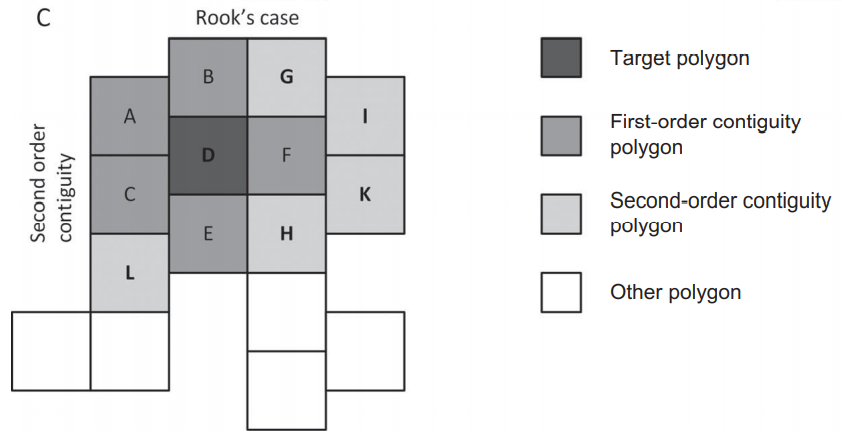
						</section>						
							
			
						<section>
									<h3>First order process</h3>
									<p>It is one that produces a variation in point density in response to some causal variable</p>
									<p><strong>Ej.</strong> The density of cases of malaria echoes the density of particular species of mosquito</p>
			
									<h3>Second-order process</h3>
									<p>It results from interactions, when the presence of one point makes others more likely in the immediate vicinity</p>
									<p><strong>Ej.</strong> Patterns of contagious disease reflect second-order processes, when the disease is passed from an initial carrier 
										to family members, co-workers, sexual partners, and others who come into contact with infectious carriers</p>
									<p>Competition for space provides a familiar example of a form of second-order process that results in an exception 
										to Tobler’s First Law</p>
									<p><strong>Ej.</strong> The presence of a shopping center in an area generally discourages other shopping centers from locating nearby</p>
						</section>
			
						<section>
									
						</section>

					</section>

						<section>
							<h1>Spatial Relationships</h1>
		
							<section>
								<h3>Adjacency (Contiguity)</h3>
								<p>Adjacency can be thought of as the nominal, or binary, equivalent of distance.
									Two spatial entities are either adjacent or they are not.</p>
							</section>
							
							<section>
								<p>Contiguity among features means the features have common borders. We have three types of contiguity:</p>
								<ul>
									<li><strong>Rook Contiguity:</strong> the features share common edges</li>
									<li><strong>Bishop Contiguity:</strong> the features share common vertices (corners)</li>
									<li><strong>Queen Contiguity:</strong> the feature share common edges and corners.</li>
								</ul>
								
							</section>

							<section>
								<h3>Rook contiguity</h3>
								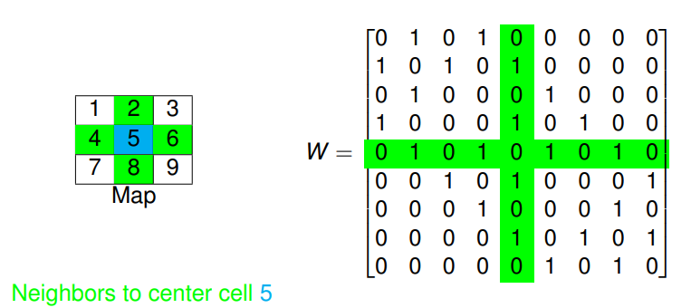
							</section>

							<section>
								<h3>Bishop contiguity</h3>
								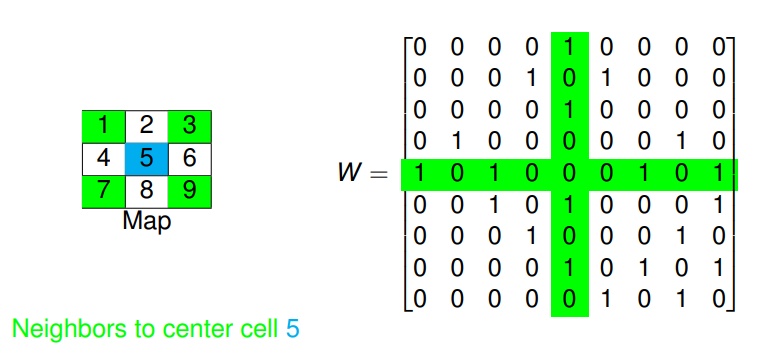
							</section>

							<section>
								<h3>Queen contiguity</h3>
								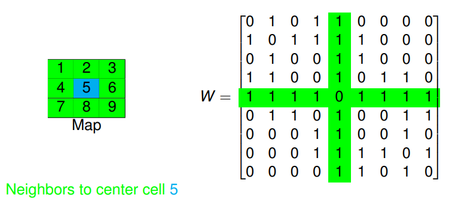
							</section>

							<section>
								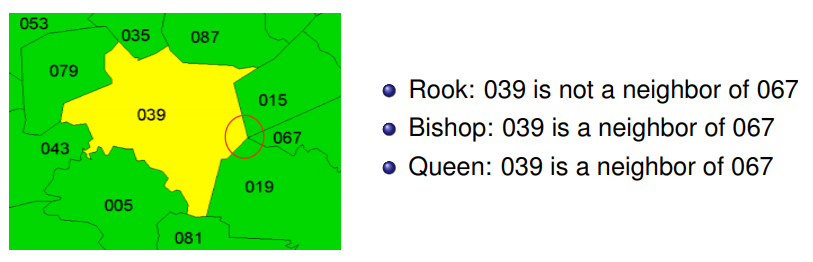
							</section>
		
							<section>
								
								
							</section>
		
							<section>
								<h3>Ej.</h3>
								
							</section>
		
							<section>
								
							</section>

							<section>
								<h3>Distance</h3>
								<p>Among the most common distance measures used in geographical analysis are
									the Euclidean distance, the Manhattan distance, the Minkowski distance, the
									Pearson’s correlation distance, the Spearman correlation distance, the network
									distance, and the geodetic distance. In spatial statistics, Euclidean and Manhattan distance 
									are those most widely used</p>
									<p>Using the coordinates of the centres of the areas, one can also create a matrix of spatial weights according to the 
										criterion of neighbourhood in a radius of d km. This means that the neighbour will be an object whose centre is not 
										more than d km away in a straight line. A special case of such a matrix is the inclusion of all areas as neighbours.</p>
							</section>

							<section>
								<h3>Minkowski Distance</h3>
								<p>The Minkowski distance is a generalized form of the Euclidean distance (if p=2) and the Manhattan distance (if p=1).</p>
								$\left(\sum_{i=1}^n |x_i-y_i|^p\right)^{1/p}$

								<h3 style="color: black;">Euclidean distance</h3>
								$\sqrt{\sum_{i=1}^n (x_i-y_i)^2}$ 

								<h3 style="color: black;">Manhattan distance</h3>
								$\left(\sum_{i=1}^n |x_i-y_i|^p\right)^{1/p}$
							</section>

							<section>
								<h3>Interaction</h3>
								<p>Interaction may be considered as a combination of distance and contiguity,
									and rests on the intuitively obvious idea that nearer things are more closely
									related than distant things</p>
		
									<p>Various types of functions can be used, including reciprocal function (or inverse distance), negative power (or inverse distance
										squared for a power of 2), negative exponential or linear with a
										negative slope (which is uncommon).</p>
							</section>
		
							<section>
								<h3>Interaction</h3>
								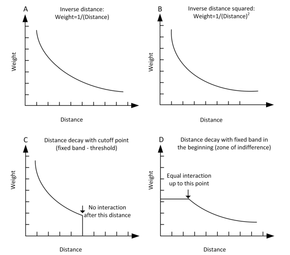
							</section>

							<section>
								<h3>Distance bands</h3>
								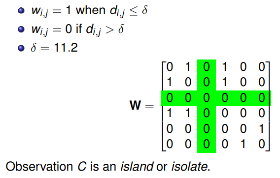
							</section>

							<section>
								<h3> Matrix of k nearest neighbours (knn)</h3>
								<p>The matrix k nearest neighbours (knn neighbours, knn) is usually constructed for point data, because unlike the 
									contiguity matrix, it only examines point data (without referring to areas). One can also create a knn matrix for 
									area data by first determining the area centroids (centres of gravity of regions – spatial geometries) and operating 
									on these points. In the case of point data, the knn matrix is a natural analytical solution, although determining the 
									number of neighbours is most often based on modelling or random experience. I</p>
							</section>

							<section>
								<h3>Inverse distance</h3>
								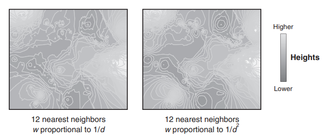
							</section>

						</section>
				
					<section>
						<h1>Standarized Spatial Weights</h1>

						<section>
						<p>Row standardization is recommended when there is a potential bias in the
								distribution of spatial objects and their attribute values due to poorly designed
								sampling procedures.</p>
							<p>Row standardization should also be used when polygon features refer to
								administrative boundaries or any type of man-made zones.</p>
							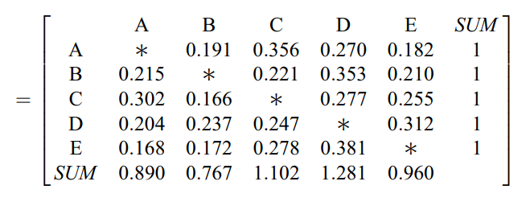
						</section>
		
						<section>
							<h3><strong>Ej.</strong></h3>
							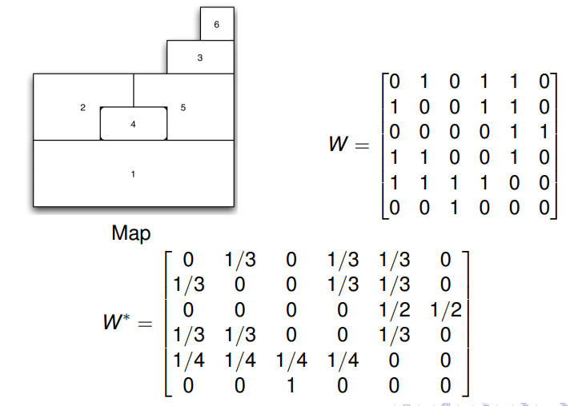
						</section>
		
					</section>

					<section>
						<h1>Spatial lag</h1>

						<section>
							<p><strong>Spatial lag</strong>is when the dependent variable y in place i is affected by the independent variables in both place i and j.</p>
							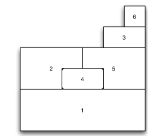
							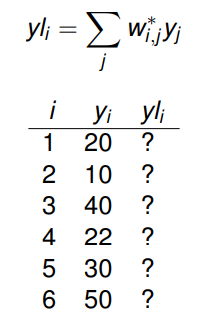
						</section>

						<section>
							<h3><strong></strong></h3>
							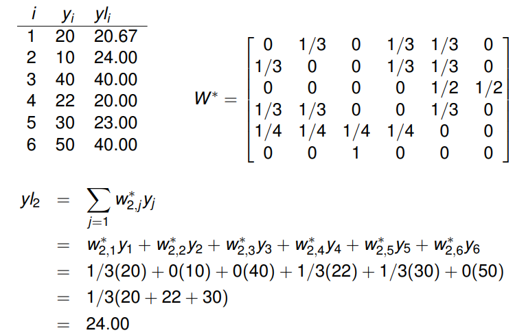
						</section>

					</section>
				
					<section>

				<section>
					<h3>Global indicator of Spatial Association (GISA)</h3>
					<p>The measures (test statistics) related to the existence of spatial autocorrelation in data, that is, focusing on whether there is any spatial autocorrelation
						in the data</p>
				</section>

				<section>
					<h1>Spatial joins</h1>

				</section>

				<section>
					<h3><strong>Ej.</strong></h3>
					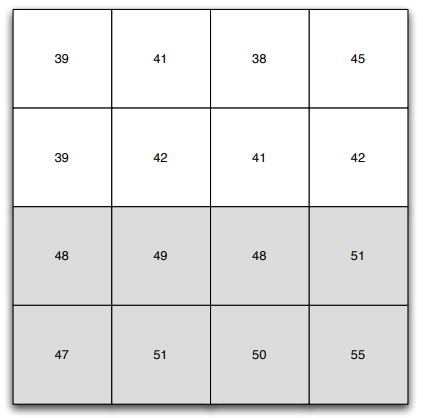
				</section>

				<section>
					<h3><strong>Ej.</strong></h3>
					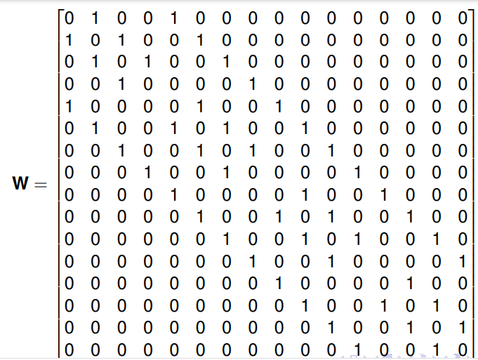
				</section>

				<section>
					<h3><strong>Ej.</strong></h3>
					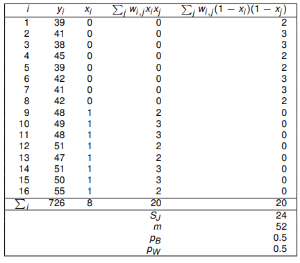
				</section>

				<section>
					<h3><strong>Ej.</strong></h3>
					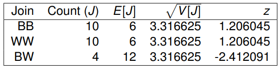
					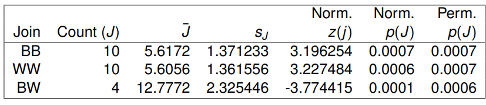
				</section>

				<section>
					<h3>Indice de Moran</h3>
					<p>The positive value of global
						Moran implies the existence of a positive autocorrelation, and conversely,
						the negative value implies the existence of a negative autocorrelation</p>
					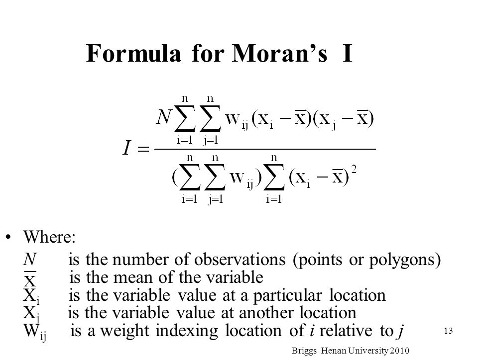
				</section>

				<section>
					<p>If there is no relationship between Income and Incomelag, the slope will be close to flat (resulting in a Moran’s I value near 0).</p>
					
				</section>

				<section>
					<h3><strong>Ej.</strong></h3>
					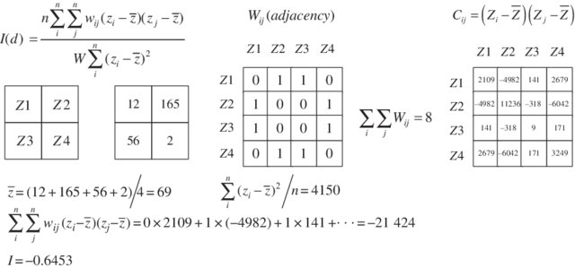
				</section>

				<section>
					<h3><strong>Ej.</strong></h3>
					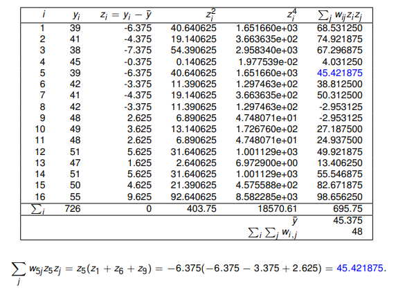
				</section>

				<section>
					<h3><strong>Ej.</strong></h3>
					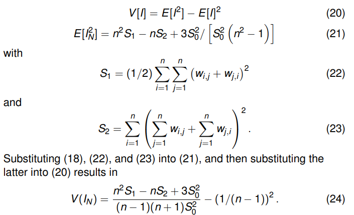
				</section>

				<section>
					<h3><strong>Ej.</strong></h3>
					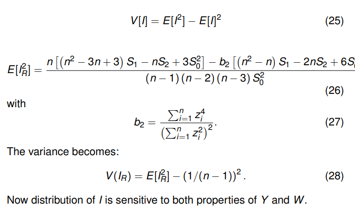
				</section>

				<section>
					<h3><strong>Ej.</strong></h3>
					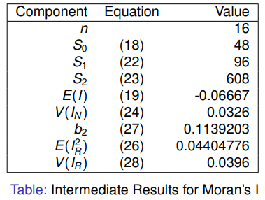
				</section>

				<section>
					<h3><strong>Ej.</strong></h3>
					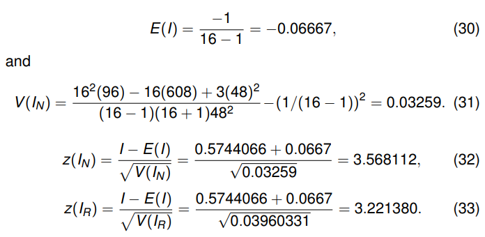
				</section>

				<section>
					<h3>Moran’s I at different lags</h3>
					<p>Moran’s I at different spatial lags defined by a 50 km width annulus at 50 km distance increments. Red dots indicate Moran I values for which a P-value was 0.05 or less.</p>
					
				</section>

			</section>

			<section>

				<section>
					<h3>Local indicators of Spatial Association (LISA)</h3>
					<p>A local statistic is any descriptive
						statistic associated with a spatial data set whose value varies from place to
						place.</p>
				</section>

				<section>
					<h3>Moran´s I scatter plot</h3>
					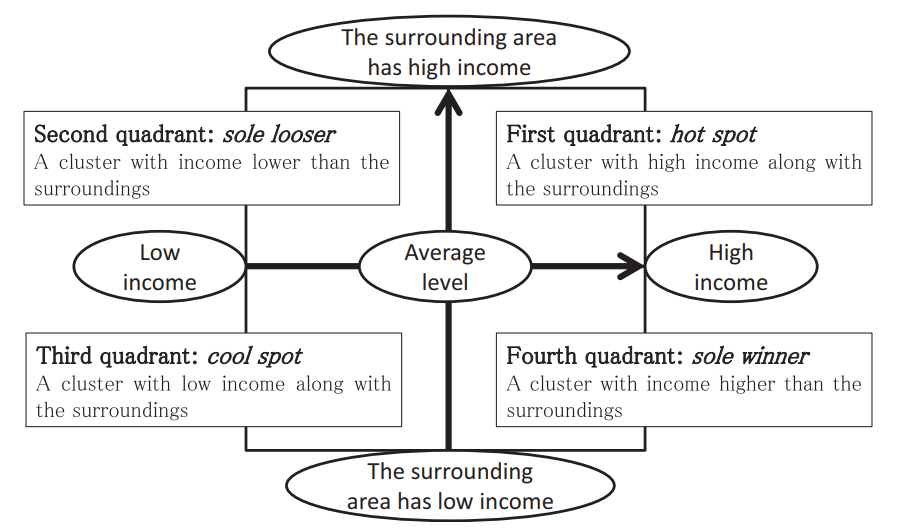
				</section>

				<section>
					<h3>Moran´s I scatter plot</h3>
					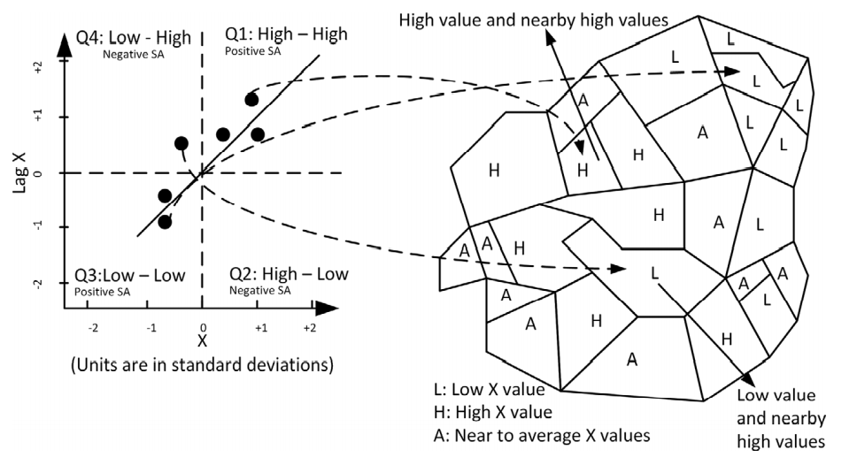
				</section>

				<section>
					<h3>Moran´s I scatter plot</h3>
					<p>Red points and polygons highlight counties with high income values surrounded by high income counties. Blue points and polygons highlight counties with low income values surrounded by low income counties.</p>
					
					
				</section>

				<section>
					<h3>Moran´s I scatter plot</h3>
					<p>Significantly High-High and Low-Low clusters with P-values less than or equal to 0.5.</p>
					
					
				</section>

			</section>
			
			
				
			</div>
		</div>

		<script src="dist/reveal.js"></script>
		<script src="plugin/notes/notes.js"></script>
		<script src="plugin/markdown/markdown.js"></script>
		<script src="plugin/highlight/highlight.js"></script>
		<script src="plugin/menu/menu.js"></script>
		<script src="plugin/math/math.js"></script>

		<script>
			// More info about initialization & config:
			// - https://revealjs.com/initialization/
			// - https://revealjs.com/config/
			Reveal.initialize({
				controls: true,
				progress: true,
				center: true,
				slideNumber: 'c/t',
				hash: true,
				menu: {
					side: 'left', // 'left' or 'right'.
					width: 'normal', // 'normal', 'wide', 'third', 'half', 'full', or
					numbers: false,
					titleSelector: 'h1, h2, h3',
					useTextContentForMissingTitles: false,
					hideMissingTitles: false,
					markers: true,
					custom: false,
					themes: true,
					themesPath: 'dist/theme/',			
					transitions: false,  // ['None', 'Fade', 'Slide']
					openButton: true,
					openSlideNumber: true,
					keyboard: true,
					sticky: false,
					autoOpen: true,
					delayInit: false,
					openOnInit: false,
					loadIcons: true
					},

					math: {
					// mathjax: 'https://cdnjs.cloudflare.com/ajax/libs/mathjax/2.7.0/MathJax.js',
					config: 'TeX-AMS_HTML-full',
					TeX: {
						Macros: {
							R: '\\mathbb{R}',
							set: [ '\\left\\{#1 \\; ; \\; #2\\right\\}', 2 ]
								}
						}
							},
					

				// Learn about plugins: https://revealjs.com/plugins/
				plugins: [ RevealMarkdown, RevealHighlight, RevealNotes, RevealMenu, RevealMath ],
				dependencies: [
				
								]
			});
		</script>
	</body>
</html>
